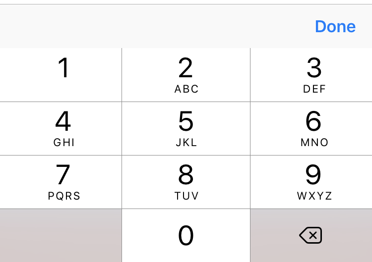

< Return to all blogs
Swift Tips and Tricks February 2017: UI Text Field Styling and Force Touch App Shortcuts
A couple of useful extensions for iOS UITextFields (bottom borders and a done button for the numerical keypad) as well as a short example of how to implement Force Touch app shortcut capabilities into your app.
Useful UITextField Extensions
One of the side projects I’m working on is very frontend focused and after spending a lot of time on my designs, I really wanted to give my app a custom look and feel. As a result, I had of modify a lot of UI elements to fit my specific purposes.
Here is an extension for a UITextField that gives two functionalities. The first is a text field with just a bottom border (think material design). The second adds a done button to the keyboard like so:

It’s very useful for the number pad input which doesn’t the native “Done,” “Return,” etc. buttons on the keyboard itself.
extension UITextField {
// Set border to none in Storyboard and then call this function to add just a bottom border
func addBottomBorder() {
let bottomBorder = CALayer()
let width = CGFloat(1.0) // Border width
bottomBorder.borderColor = Colors.red.cgColor // Border color
bottomBorder.frame = CGRect(x: 0, y: self.frame.size.height - width, width: self.frame.size.width, height: self.frame.size.height) // Frame
bottomBorder.borderWidth = width // Apply border width
self.layer.addSublayer(bottomBorder) // Add to text field
self.layer.masksToBounds = true
}
// Add done button to number keyboard
// Source: https://gist.github.com/jplazcano87/8b5d3bc89c3578e45c3e
func addDoneButtonOnKeyboard() {
let doneToolbar: UIToolbar = UIToolbar(frame: CGRect(x: 0, y: 0, width: 320, height: 50)) // Create keyboard toolbar
doneToolbar.barStyle = .default // Set style
let blankFlexSpace: UIBarButtonItem = UIBarButtonItem(barButtonSystemItem: .flexibleSpace, target: nil, action: nil) // Add blank spacing item to left of done button
let doneButton: UIBarButtonItem = UIBarButtonItem(title: "Done", style: .done, target: self, action: #selector(self.doneButtonAction)) // Add done button
doneToolbar.items = [blankFlexSpace, doneButton] // Create array of the items and add to toolbar
doneToolbar.sizeToFit() // Fit to screen size
self.inputAccessoryView = doneToolbar // Add toolbar to keyboard
}
// Function called when done button pressed
// Put manually put under action
func doneButtonAction() {
self.resignFirstResponder() // Desselect
}
// MARK - End of adding done button to number pad
}
One of the things on my bucket list is to build and publish my own libraries. This would not only improve my own development and production speed, but also give you tools/UI tweaks that you might find useful. I don’t typically use libraries in my projects, but I do see their benefit. Because I’m focusing on the learning right now, I’ve been building my own “libraries” from scratch as a teaching tool for myself. Hopefully I can push one of those out to you all soon!
Force Touch Shortcuts
First you must setup your Info.plist file to give your app permission to use Force Touch app shortcuts. Here is a useful tutorial for doing just that: developer.apple.com
// Launch a specific screen as initial VC
private func launchInitialVC(viewController identifier: String) {
self.window = UIWindow(frame: UIScreen.main.bounds)
let storyboard = UIStoryboard(name: "Main", bundle: nil)
let initialViewController = storyboard.instantiateInitialViewController() as! UINavigationController
self.window?.rootViewController = initialViewController
self.window?.makeKeyAndVisible()
// Perform required segues and navigations
if (identifier == Storyboard.editEventDetails) { // If launching edit details screen
initialViewController.pushViewController(storyboard.instantiateViewController(withIdentifier: Storyboard.categorySelection), animated: false)
let categorySelection = initialViewController.topViewController as! CategorySelection
categorySelection.newEventNoCategory(self)
}
}
Here are some other useful tools for giving your app Force Touch capabilities:
Useful tutorial: http://samwize.com/2016/04/25/tutorial-on-creating-app-shortcut-with-3d-touch/
Design guidelines on shortcut icons: https://developer.apple.com/reference/uikit/uiapplicationshortcuticontype
Hope this was useful! Sorry my blog posts have been fairly minimal in writing. I haven’t had a lot of time this semester because of my heightened work load. Hope I’ll catch a break soon so I can put some more time and thought into my pieces. Thanks!
Posted in iOS Development with Swift, Tutorial